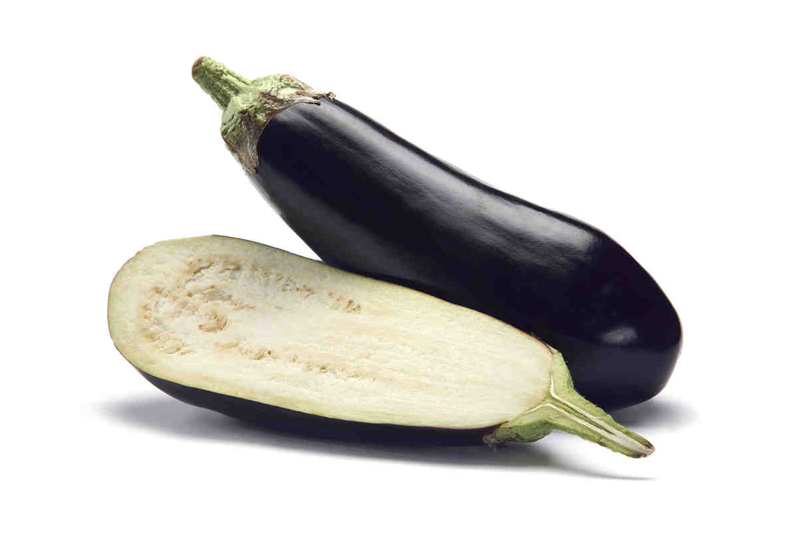

JESTES BAKLAZANEM
 wyjdz z piwnicy
to moja pierwsza rada
baklazan jest troche mdly w smaku i w ogole troche dziwny
jednak jak sie go dobrze przyrzadzi to palce lizac
dlatego postaraj sie troche wyjsc do ludzi
i nie mow dziwnych rzeczy
i nie siedz tyle przed kompem srsly